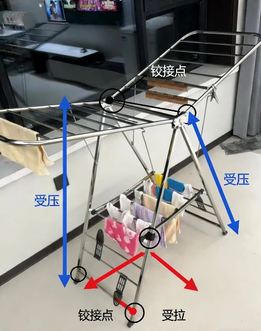
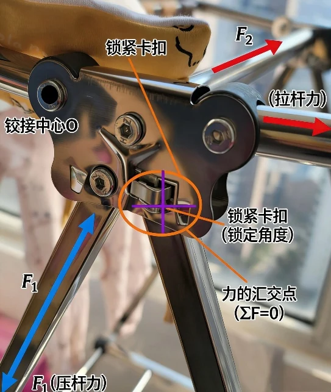
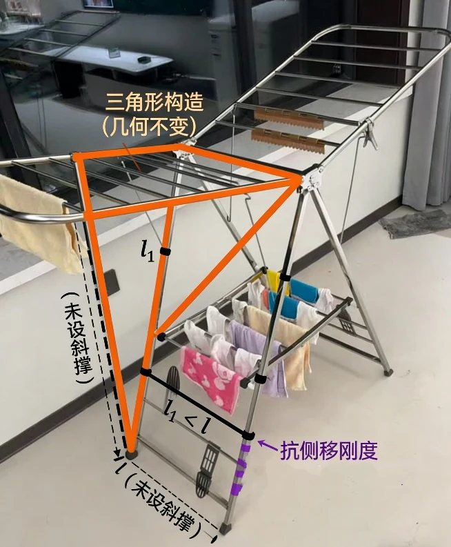
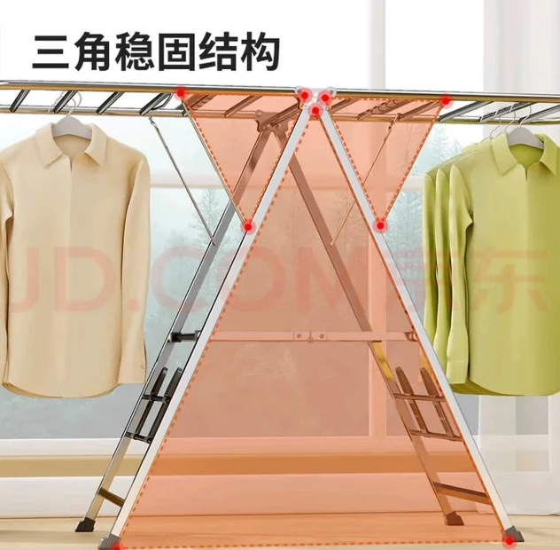

大连交通大学 · 智能建造23
我的原作从“摇摇欲坠”到“稳如泰山”——晾衣架中的压杆稳定与几何构造分析
高悦涵
1.压杆稳定与结构几何稳定性
1.1问题的物理意义：承重与失稳的博弈
落地晾衣架是典型的桁架或排架结构简化模型。其受力核心在于竖向立杆。
竖杆（压杆）：承受衣物湿重及架体自重的竖向压力。
横杆/拉链（拉杆）：限制竖杆底部的水平位移，承受拉力。
对于竖杆而言，最大的威胁并非材料被“压碎”（强度破坏），而是“失稳（Buckling）”。根据欧拉公式（Euler'sFormula），理想压杆的临界力为：
其中：
——杆件的抗弯刚度；
——杆件的计算长度，
当晾衣架挂满重衣物时，若竖杆过于细长（过大或过小），一旦压力，竖杆就会瞬间发生侧向弯曲甚至折断。
1.2优化趋势：几何构造的介入
为了提高承载力，除了增大杆件截面（增加），最有效的方法是减小计算长度。
通过在竖杆与横杆之间设置“斜撑”，引入三角形几何构造：
几何稳定性：三角形是唯一的几何不变体系，能防止机构运动（摇晃）。
减小计算长度：斜撑作为支点，将一根长压杆分割为两段短杆，极大地降低了长细比，成倍提升了临界承载力。
2.生活中体：晾衣架的“A字”智慧
2.1压杆与拉杆的协同（受力定性）
晾衣架采用桁架式稳定结构，通过“A”字形骨架+三角形几何构造实现力学高效传递：整体依托“三角形几何不变体系”，避免框架变形、侧倾；杆件仅传递轴心拉力/压力，无额外弯矩，材料强度利用率最大化；铰接节点让杆件自由转动，进一步保证轴力主导的受力模式。


竖杆：承担衣物、晾衣架自重，向下传递压力至地面，属于受压构件；
底部水平横杆：抵消竖杆因压力产生的外扩趋势，被“拉紧”产生向内拉力，属于受拉构件；
铰接点：仅传递力的大小和方向，不限制杆件转动，避免杆件产生额外弯曲应力。
2.2斜撑对稳定性的贡献（几何构造分析）
为了防止晾衣架侧向失稳，设计者可以在转角处设置了微型斜撑，构建了稳固的三角形单元。这不仅锁住了几何形状，还为细长的压杆提供了中间支点，减小了其在平面内的计算长度，使其能承受更重的衣物而不发生屈曲。

3.对照《结构设计原理》内容：长细比与轴心受力
本案例深入体现了教材中关于轴心受力构件（特别是受压构件）的几个核心控制指标：
3.1长细比的控制
在《结构设计原理》受压构件章节中，长细比是决定构件承载能力的关键参数：
(式中为回转半径)
对照分析：晾衣架的竖杆通常做成空心圆管，这是为了增大。而斜撑的存在，直接减小了。这一套“组合拳”有效地降低了长细比，使得稳定系数显著提高，从而在不增加壁厚的情况下提升承载力。
2.几何可变体系与几何不变体系
在结构力学基础部分，结构被分为几何可变（如四边形框架，容易倒塌）和几何不变（如三角形桁架）体系。

对照分析：晾衣架如果只是一个矩形框，稍有风吹草动就会变为平行四边形而倒塌。底部的横拉杆和斜撑，本质上是增加了“多余约束”，将可变体系转化为不变体系，确保了正常使用极限状态下的几何稳定性。
3.拉压杆的材料选择差异
教材中指出，受拉构件主要由钢筋、钢材强度控制，不存在失稳问题；而受压构件由稳定性控制。
对照分析：仔细观察会发现，晾衣架的竖杆（压杆）通常是较粗的硬质金属管（防失稳）；而横拉杆（拉杆）有时仅仅是一根细链条或细钢丝。这是因为受拉构件不需要考虑和，只取决于截面面积。这种“粗细搭配”正是结构设计原理中“按需分配”理念的完美体现。
这是一份便于网页阅读的原作视图，保留提交内容的文字、图片和基本顺序；公开页面不显示学号。